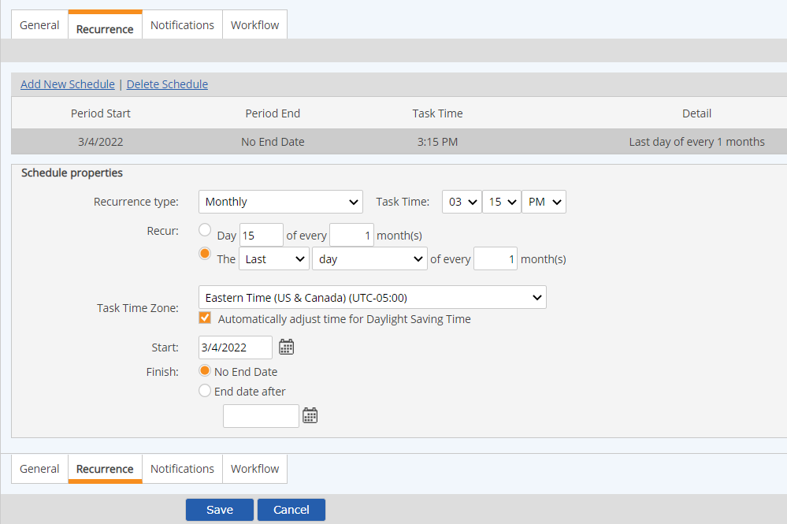

One or more task schedules can be set for a recurrent task.
Task schedules may be edited at any time to add or delete schedules, change an existing schedule, or change assignees.
A task schedule that has completed instances may not be deleted. Instead, you can set an end date for the schedule.
To schedule recurrent tasks:
Choose the Recurrence Type from the list: Hourly, Daily, Weekly, Monthly, Yearly or Time After Last Completion.
Time After Last Completion is relative to the last task completion date. See note below for completion restraints on tasks with this recurrence type.
Depending on the recurrence type, the appropriate fields appear to set up the schedule.
Select the task occurrence criteria. Criteria will vary depending on the recurrence type.

Task Time Zone: Select the time zone in which the task is actually performed. When a task is created, the Task Time Zone defaults to the task creator's time zone. If the task assignee's time zone is different, be sure to change the time zone to the assignee's, if appropriate. When viewing a task summary, the task due date/hour is shown in the viewing user's time zone. In Reports, the time zone(s) displayed for data or information is the local time(s) of the parent Facility.
To add another schedule, click Add New Schedule again and configure the setup information for the next schedule.
After configuring any other task information needed, select Save.
Tasks with a recurrent schedule of Time After Last Completion may not be completed so far in advance of the due date that the date of completion would cause a new task to be created with a due date earlier than the original task. For example, a task with a time after last completion of 1 month may not be completed earlier than 1 month before the due date, since the next task would be then be due before the original task.
Due Time (for all new tasks created after 9.4.4 release): The due time for a Time After Last Completion task will always be the same as the original (first) task, unless a value greater than 0 is selected for hour(s). The due time of the next task is calculated based on Task Time from schedule settings, regardless of Completion Time of previous status.
If a task schedule is set up in such a way that no instance will actually occur, the message "No Instance Due" will appear for the due date for the task in the task list. This allows the task to be displayed for editing purposes.
For example, a task has a recurrence schedule for the 24th of each month. However, the Start date for the task is set to 09/27/2010 and the End date is 10/20/2010. No task due date will occur in this period, so the task will have no instances.
Validations when saving the task schedule will normally prevent such occurrences, but there may be some conditions under which such tasks are created (for instance, by automated task creation processes).